mach-instset
The machine instruction set at /m/mach: a machine is metatron's unit of **process** — a rec::T of five components (instruction set, compiler, memory, network, processor), three of which are also prefixed components. Machines nest as frames (push, move, pop) and distribute work by shipping code — workloads of config and code — to their peers.mach-instset-mtron.md
mach instruction set (/m/mach)
A machine is metatron's unit of process: everything runs in one, and / is the root machine.
machine::T carries exactly five components, each one rec::T entry:
| slot | what it holds |
|---|---|
instset | the machine's instruction set architecture (types and insts) |
compiler | the source to code::T converter |
processor | the runtime that executes code::T over the metatron graph |
memory | the address space: relative uris (stack) and absolute uris (spaces) |
network | the machine's own reach — the peers it dialed or accepted |
Machines nest: a pushed child reads through to its parent's memory, so a child is a nested frame of reference rather than a copy of the world. Reach does not nest — see network: peers are the pushing machine's own, knowledge (the roster) is root-shared. Frames covers the three instructions that choose where code runs, and distribution covers how work reaches a machine in another process: by shipping code to it.
components
Each slot is a component::T (/m/mach/component), a rec::T that resolves its machine (>>space), so all five slots
are addressable from mtron and together are the whole of a machine's state.
Three of them are prefixed components: each keeps a table of short names to values, and the three tables resolve by one rule — the nearest declaration wins.
| component | a name denotes | example |
|---|---|---|
instset | a scheme alias for a vocabulary root | math:cos → /m/math/inst/cos |
network | an authority a peer is called by | //ginger/a → ws://ginger.local:8555/a |
memory | a short name for a path (the redirect table) | cos → /m/inst/cos |
A component's rows are its own address space: *<~/network/prefix> is what a frame calls its peers by, memory's rows
are its redirect table (*<~/memory/redirect>), and an ISA's rows are scheme aliases. Declaration and withdrawal are
writes to that address, so the table answers what a read-back would store. The level chain is each component's
previous: a name declared here outranks an enclosing declaration, and a pop gives the shadowed meaning back.
Resolution has one gate — an address carrying a host is aligned against the network's names, a scheme-less vid
against the ISA's, and memory's redirects are consulted by the ISA's resolver; the slots cannot collide, so the order
is unobservable.
instset (instruction memory)
mtron> */m/inset?docq
==>docs::[desc=>'no documentation available']
instset is the frame's visible vocabulary: the types, instructions, rewrites and sugars a program compiled here
can see. It is a union in two directions — this frame's own structure over its imported sets, and that whole stack
over the enclosing machine's instset. memory and network are a two-level walk (a frame over its parent); the
vocabulary is that and an ordered list.
| part | what it is |
|---|---|
| own structure | the type / inst / rewrite / sugar entries written in this frame |
reference | an ORDERED list of the vids of the instruction sets this frame imported — held by reference, never copied |
previous | the enclosing machine's instset — inherited lazily, so a child that imported nothing still sees what its parent imported, even an import the parent makes later |
Two rules are the whole point:
- an import is a reference, never a copy — the library in space is shared by every machine that imported it, and mutated by none;
- resolution is own-first — a declaration made here outranks a name from any set this one refers to, and among the references import order is precedence.
The membership lives in the rec under reference — singular, like pattern, type and inst, holding a list — so
the vocabulary reads from mtron as itself rather than as an opaque template. Importing is the import instruction,
which takes the ISA's uri.
The rec records vids; the frame holds the sets by object. That split makes membership reflective and independent: printing the rec never inlines a library, and resolution reads the objects, so belonging to a machine does not depend on the address index at all.
instruction set architecture (machine schema)
![one machine, two memories, one read, drawn as two boxes headed by their types, memory::T and instset::T. An instruction set joins the machine twice: the machine::T vertex sends membership (solid) into instset::T and registration (dashed) into memory::T. memory::T does two things, one row each — a value at an address (/usr/marko/age, value, 29) and a route (the name plus, route, the address /m/inst/plus) — and a dotted line carries that same address across the gap into instset::T. There the query ?nat<=nat admits the int contract (drawn solid) while the address's other candidates, real and str, sit dotted inside a group bracket labelled off nat's path, because the query's domain only reaches down nat's path. Beneath both boxes one read runs — mtron's *id, then network, then memory, then instset (on a miss) — with dotted lines tying each hop to the box it asks. The tags under each header give the two lenses: INSTANCES / data and SCHEMA / inst](../assets/mach-instset.png)
An ISA is also a space::T, and that is now down to one remaining dependency. Belonging to a machine has two
halves:
| half | what it is |
|---|---|
| membership | the ISA is held by object in the frame that referred it — this is the vocabulary, and it needs no address space at all |
| registration | the ISA is also entered in the machine's address index — the only reason it is a space::T, and the only reason its content is reached by asking for it as an address |
Both halves happen in one place, so neither is had without the other by accident. The union needs only membership: a machine can already hold a member that is not one of its spaces, and a read reaches it through instruction memory. Removing the registration finishes the sentence — it is blocked on three things, each measured rather than assumed:
- migration writes — an instruction set's setup hands a declaration that falls outside its own pattern to the set that owns it by writing to an address, which only works while the owner can be found in the address index;
- declining spaces — the catch-all space matches every address, so a space must answer
noobjfor a vid it cannot interpret rather than throw, or an odd query string becomes a boot failure; - documentation ownership — a set's setup wraps each declaration in its documentation, and resolving which space owns an id goes through the address index: with the registration gone that resolution falls through to the enclosing space, and a setup goes from ~0.1s to ~4.2s (measured: 4.0s to 200.5s on one suite).
Not yet: the vocabulary a frame sees is meant to be the union of the sets it imported and the declarations made
under its own ~ — ~/type/friend, ~/inst/purchase — for those same four kinds. const is deliberately excluded
from that projection, and the reason is the point: ~ is the frame's whole address space, so a projection that
admitted consts would union the frame's memory into its instruction set. (A few consts do still sit in the
instruction sets' own tables; that is the one place the schema/instance split is blurred, and gutting them is a
separate pass.)
A frame's own declarations are visible from that frame because the read asks data memory before instruction memory;
moving them into the frame's own ISA structure is the write path that makes the projection real, and it comes first.
The projection also needs ~ to be the current machine — it resolves to the current machine's vid and does not
fall through to an enclosing frame, so inheriting a parent's ~-addressed vocabulary has to be built (re-bind ~
at each level of the walk, or walk frames in the projection); it does not come free with the address walk.
what a read is
Reading the vocabulary is not a lookup that stops at the first frame that answers. It is a walk of the whole union — own structure, then each reference in import order, then the enclosing frame — collecting candidates, and the rules are per identity rather than per name:
- an identity a nearer level already answered is shadowed — own-first, and the reason a local redeclaration wins;
- an identity not yet answered is added alongside — a set that overloads a name does not erase the name, so
plusis a family rather than a slot.
Identity is the schema's own: an inst or rewrite by its tid, a type or const by its vid.
Because the union is schema, a read is a query. The dom/rng in the pattern are type constraints: a candidate whose
domain the query's domain refines is admitted, walking the refinement lattice — *plus?nat<=nat answers with the
int contract, since nat's path is nat → int → #, while *plus answers with the whole family. A query that names a
dom ranks candidates closest-to-the-token first; one that does not is unranked.
A short name is an address in disguise, and it is data memory that resolves it — the small→big tables turn
plus into /m/inst/plus — after which instruction memory answers the address. The division is deliberate: a name is
not something an instruction set resolves about itself.
The vocabulary belongs to the machine, so every thread of that machine sees the same one — per-thread state lives on the stack, not in a component. Three behaviors in particular are pinned rather than assumed: identity shadowing and adding alongside, including a member that is not a space; dom/rng admission down the refinement lattice; and isolation — own, inherit, no leak up, no leak across.
instset::T is one of the three prefixed components (components): its names are scheme aliases, resolved to an
address under the set's root by the same nearest-declaration walk, not by a per-set algorithm.
compiler
mtron> */m/mach/compiler?docq
==>docs::[desc=>'no documentation available']
compiler::T is a composition, not an algorithm. Four atomic stages, each an optional rec entry with a default:
applying a compiler runs them in order — parse → rewrite → resolve → type — handing each the whole of what the last
one produced.
Because the stages are wiring, the largest compiler and the smallest are the same type: a bare compiler::[=>] is
the default compiler, and naming one entry overrides exactly that one stage.
| stage | rec key | default | what it settles |
|---|---|---|---|
| parse | parser | mtron_parser::T | the obj a program's text denotes — and so the language being compiled |
| rewrite | rewriter | fixpoint_rewriter::T | the instruction chain itself, before any type is known |
| resolve | resolver | scoring_resolver::T | which concrete instruction each call becomes, per element type |
| type | typer | typer::T | the type assertions applied to the result |
Only the parser accepts source text (or an already-parsed obj — see parse); every stage from there on takes
code::T and returns code::T. Naming a stage that is not that stage's own type is refused where it is written, not
when the compiler is first used:
mtron> compiler::[parser=>mtron_parser::[=>]]
mtron> compiler::[rewriter=>fixpoint_rewriter::[max=>3]]
parse — where a language is hosted
parser::T is the seam where a language is hosted: any language can be parsed as long as it generates code::T.
Given the rich type system, the object-oriented and functional-oriented approach, and Turing-completeness, most any
language can map to mtron code::T.
Because the stage emits code, and because the three stages after it, the processor, and the distributed runtime all
take code, another surface syntax needs no new instruction set, evaluator or type system — only a parser::T wired
into a compiler:
compiler::[parser=>a_lang::[=>]] [-- the shape; a_lang::T is a registered subtype --]
The stage is total over objs: an obj that is not a str is not source text, so it is not re-read — it is lifted as
it stands. One compiler therefore takes a program's text or the obj it has already been parsed into.
A grammar's own result is not always a code. mtron's reads three shapes, and the stage lifts all three:
| source | the grammar yields | lifted to |
|---|---|---|
6.plus(1) | code::T | code as result |
plus(1) | a lone inst::T | code with one-inst (no start added) |
5 | int::5 | code that starts with it |
A lone inst deliberately gets no start: a head-first call is a fragment relative to its lhs (plus(1) applied to
noobj is noobj, applied to 6 is 7), and inventing one would turn a pipeline stage into a program that runs on
nothing.
mtron_parser::T is the parser metatron ships — source text written in metatron's mtron language to code::T:
rewrite — the chain, before any type
The rewrite stage runs before resolution, so the rules see generic dom/rng rather than bound ones. This is where the shape of the compiled chain is decided: a rule-driven collapse, a native pushdown, and a distributed reduce's gather point all enter the compiled form here.
| rewriter | the rule |
|---|---|
fixpoint_rewriter::T | apply every rewrite rule registered by every instset, in turn, over the whole code, and repeat until the code hash is unchanged for max consecutive passes (default 2) — so a rule re-runs on every pass and must be idempotent |
identity_rewriter::T | return the code unchanged — for a compiler whose rewriting happens elsewhere |
mtron> fixpoint_rewriter::[=>]
mtron> fixpoint_rewriter::[max=>3]
resolve — the walk and its two strategies
Resolution is the compiler's widest-reaching stage: it turns a generic instruction chain into a typed one by threading each inst's range into the next inst's domain, and per inst it asks two questions of two internal components:
| collaborator | the question | default |
|---|---|---|
selector | which candidates may this call resolve to, and in what order? | specificity_selector |
binder | can this candidate be made concrete? | generic_binder |
A candidate that cannot be bound must not be selectable, so binding gates selection — it runs inside the selector's candidate walk. That is why the pair is two rec entries of one stage rather than two stages, and why any selector composes with any binder:
mtron> firstfind_resolver::[=>]
mtron> scoring_resolver::[selector=>firstfind_selector::[=>]]
mtron> identity_resolver::[=>]
| strategy | the rule |
|---|---|
specificity_selector::T | score candidates by how specific their signatures are; take the first the binder can bind |
firstfind_selector::T | the first viable candidate in read order, no scoring — selection is order-dependent |
generic_binder::T | bind generics to the lhs, gate on the lhs domain, resolve the call's arguments |
identity_resolver::T | no walk at all — it returns the code unchanged |
What the walk settles is what the processor then runs: whether an inst is a filter (whose {0,1} wing is dropped
for compile-time typing only), a gather/barrier, or an initial inst seeding the element type from its own
argument, and a cast whose range is rebound to the named type. An inst that cannot be resolved is left in place for
runtime resolution: a semi-resolved code, not a failed one.
type — the fourth stage
The last stage is the machine's own type assertion. typer::T is where a frame holds how much checking it wants, in
the same style as the other three: a rec entry, optional, defaulting.
Not yet wired: the typer is the identity today, and enforcement still reads the global registry — flags mirrored
at /sys/typer/stage, which a boot profile sets through its typer/stage rec. Moving those flags into the machine is
what the typer::T stage is for.
processor
mtron> */m/mach/component/processor?docq
==>docs::[desc=>'no documentation available',
obj=>component::T[?[
{?}state=>union(stop,run,pause),
{?}result=><#>::T]]@/m/mach/component/processor]
The compiler produces code; the processor runs it. The two are siblings rather than stages of one another, which is
why the compiler's last stage hands off instead of invoking: what a program means and how it is run are separate
axes of a machine.
| type | what it is |
|---|---|
processor::T | the runtime contract: a machine component that executes a code::T and reports a state (stop / run / pause) and a result |
monad_processor::T | a processor that carries monadic state |
swarm_processor::T | the default: it schedules independently executing monads across the code's inst chain; barriers synchronize them, and the objects of the halted monads are the result |
threads
mtron> */m/mach/thread?docq
==>docs::[obj=>rec::T[?[
code=><#>::T,
{?}source=>uri::T,
{?}runtime=>real::T@/m/math/time,
{?}yield=>thread::T,
{?}loop=>real::T@/m/math/time,
{?}state=>union(stop,run,pause),
{?}result=><#>::T]]@/m/mach/thread,
args=>[
{?}runtime=>"computes the thread's current runn...",
{?}result=>'the last result produced by the th...',
{?}loop=>'delay to repeat code evaluation (d...',
{?}time=>'the datetime::T when the thread wa...',
{?}state=>'current state of the thread',
code=>"the thread's executing code"],
desc=>'[structural] the thread base type',
core=>docs::[
obj=>thread::T[][ctor?core<=(#{*}::T){<j>}]@/m/mach/thread/core,
desc=>'[structural] run a concurrent core...',
example=>['core::[code=>ping(<phaseshift.stud...']],
virtual=>docs::[
obj=>thread::T[][ctor?virtual<=(#{*}::T){<j>}]@/m/mach/thread/virtual,
desc=>'[structural] run a concurrent virt...',
example=>['virtual::[code=>ping(<phaseshift.s...']]]
A machine's work is carried by threads (/m/mach/thread), rec::Ts with a lifecycle:
| key | what it is |
|---|---|
code | the code the thread is executing |
time | when the thread was started |
runtime | the thread's current running time |
loop | a delay to repeat the code (absent: evaluate once) |
state | the thread's current state |
result | the last result the thread produced |
thread::T is the base; core::T and virtual::T are the two concrete platform strategies
(core::[code=>…,loop=>second::1.0]@~/thread/… runs a platform thread, virtual:: a virtual one). The default
machine's work runs on virtual threads.
memory (data memory)
mtron> */m/mach/component/memory?docq
==>docs::[desc=>'no documentation available',
obj=>component::T[][ctor?memory<=(#{*}::T){<j>}]@/m/mach/component/memory]
memory::T is the machine's data memory: the address space of instances. Its relative bindings are the rec,
and the index of absolute spaces is the space entry inside it, so a memory reads from mtron like any other rec. A
child machine reads through to its parent's memory; that walk is what makes a machine a frame of reference.
memory::T is also a prefixed component: its name table is the redirect table, whose rows map a short name to its
preferred home. A name is declared and withdrawn by writing that table, a relative home is not a row — a name denotes a
path — and a short name resolves to its home. The table is per level, so a child's withdrawal never touches an
enclosing binding; the same nearest-declaration walk inherits and shadows it (components).
Two memories, one read. memory holds instances and instset holds schema, and a read is the language's single
way in: a read asks three sources in order — the network (an address carrying an authority a peer declared
is that peer's to answer), then data memory, then instruction memory if data memory missed. The division of
labor is clean and worth holding on to: data memory routes names to addresses (its small→big tables are what turn
plus into /m/inst/plus) and instruction memory answers addresses. A read made from inside an instruction-set
read is a data read — answering a schema query resolves the dom/rng types of the pattern, and resolving a type is
itself a read — so instruction memory is not re-entered from there.
network — reach, presence and denotation
mtron> */m/mach/component/network?docq
==>docs::[obj=>component::T[?[
{?}pattern=>uri::T,
{?}host=>uri::T,
{?}roster=>[
{?}discover=>rec::T[?[status=>bool::T]]@/m/web/discovery,
{?}machine=>[uri::T=>uri::T]],
{?}peer=>[uri::T[/m/inst/pred?rng=#{?}&dom=#{?}(<#{*}>::T)]@/m/uri/path_encoding=>rec::T[?[
origin=>uri::T[/m/inst/pred?rng=#{?}&dom=#{?}(<#{*}>::T)]@/m/uri/origin,
{?}host=>uri::T,
{?}client=><#>::T]]@/m/mach/peer],
{?}listener=>[uri::T[/m/inst/pred?rng=#{?}&dom=#{?}(<#{*}>::T)]@/m/uri/path_encoding=>rec::T[?[
origin=>uri::T[/m/inst/pred?rng=#{?}&dom=#{?}(<#{*}>::T)]@/m/uri/origin,
{?}route=>[uri::T=><#>::T],
{?}server=><#>::T]]@/m/mach/listener],
{?}supervisor=>rec::T[?[status=>union(supervising,closed)]][ctor?network_supervisor<=(#{*}::T){<j>}]@/m/mach/network_supervisor,
{?}prefix=>{?}[uri::T=>uri::T],
...(1 more)]][ctor?network<=(#{*}::T){<j>}]@/m/mach/component/network,
args=>[
{?}roster=>'known machines, connectionless: <h...',
{?}listener=>'the sockets this machine serves th...',
{?}status=>'the health method — an auto inst c...',
{?}peer=>"machine's own connections, one per...",
{?}pattern=>'the branch this network answers as...'],
desc=>"[structural] a machine's network: ...",
example=>[
'network::[roster=>[b=><ws://192.16...',
'network::[peer=>[<ws/localhost/391...']]
network::T holds three indexes, and their scopes differ by design:
| index | what it holds | scope |
|---|---|---|
peer | the members this level reaches, keyed by the dial's path encoding | the frame's reach — never inherited |
listener | the sockets this level serves on: origin, server, and this level's route table | the frame's presence — socket shared |
prefix | the names a peer is called by (//ginger => ws://ginger.local:8555) | a level's denotation |
Reach and presence are retracted by a pop; a name is denotation, so a frame may bind one and a pop gives a shadowed
meaning back.
reach — one member per surface
A peer is keyed by the dial's address written as a path: scheme, every label of the host, port and route as path
segments, and never a ?q. ws://localhost:8555/mtron sits at ws/localhost/8555/mtron, so the member is itself an
address, ~/network/peer/ws/localhost/8555/mtron. A legal path carries no dot in any segment (a dotted first segment
reads as a host), so a host is split into its labels: ws://peer.local:8555/mtron is ws/peer/local/8555/mtron and
ws://10.0.0.7:8555/mtron is ws/10/0/0/7/8555/mtron. Two routes of one service (/mtron and /mcp on one port)
are two members; a loopback alias is spelled localhost, so 127.0.0.1 keys the member localhost already holds.
Two positions are shapes rather than conventions, typed by URI refinements owned by this instruction set:
| type | predicate | holds |
|---|---|---|
origin::T | scheme and host, no path, no ?q | the service a peer reaches |
path_encoding::T | scheme, host labels, port and route as path segments; no authority | the peer and listener map keys |
A peer entry therefore cannot be keyed by a wire address or carry a route as its origin; the predicate rejects the write.
| field | what it is |
|---|---|
origin | the service it reaches (scheme://host:port) — the one field a peer cannot lack |
host | where it was dialed, route included (ws://h:p/mtron) |
client | the protocol client the dial constructed — held so drop can hang it up |
One type, two honest states: an origin alone is known, not reachable from here — the form a peer reference
takes after crossing a wire; an origin with a client is reachable. A peer carries no name, status or handler: an
identity parameter belongs to the client's session, status is derived on read, and the handle is the client.
the two doors — index and drop
A construction is a connection, and the two addressing verbs are the whole lifecycle: index(m) — a thing that
exists enters the jurisdiction — and its dual drop(address) — the address maps to noobj, the universal close. Both
network indexes are entered and left by those two verbs; no other door writes them.
index dispatches on the handle's nominal type:
| handle | what index does |
|---|---|
a protocol client (ws_client::T, http_client::T, id_client::T, …) | reads the claim from the client, mints a peer::T at the claim's path encoding, supervises a link |
a listener::T entry | mounts the socket: refuses a route another level serves, shares the server, writes this level's entry |
Nominal, not structural: a listener entry's fields are maybe() (a route table is absent while nothing is served), so
a rec that merely carries those fields is not a socket. The type is the dispatch.
drop names a member by any of the addresses it answers to:
| the address | what is retracted |
|---|---|
a peer's key (ws/localhost/8555/mtron) | that member; the client is released |
a wire uri with a route (ws://host:8555/mtron) | that surface |
a bare origin (ws://host:8555) | every surface of the service — reach only, never a socket |
a socket's key (ws/localhost/8555) | that listener: this level's entry, the server released when this level owns it |
unlisten(origin) is exactly drop(origin.pathEncoding()). A pop releases each listener in turn (the level's share
of the socket, and the socket itself when the level owns it) and drops each of its peers. Answers follow the union-bag
rule: one retraction collapses to the member, several to a bag, none to noobj.
mtron> </network/peer/ws/localhost/8555/mtron> -> noobj [-- hang up: the member leaves the map --]
mtron> </network/peer/#> -> noobj [-- hang up every member --]
No two equivalent connections. Dialing a surface the machine already holds closes the connection there and the new one takes its key; the member's identity is its surface, so a dial announces nothing about itself.
presence — the socket
A machine's own authorities — what mDNS announces for it and what a roster files under its name — are exactly its
listening surfaces: a ws_server::T or http_server::T that binds a socket. A backend the machine dials
(tblespace, mqttspace, grphspace, vecspace) is reach, never identity, so its host, credentials included, never
leaves the machine in an announcement, a roster key or a TXT route; an address carrying userinfo is refused outright
rather than stripped.
A listener entry is a listener::T rec:
| field | what it is |
|---|---|
origin | the socket's service uri as spelled (scheme://host:port) |
route | this level's routing table on the socket, <path> => target; absent while empty |
server | the protocol server holding the socket — held so the owner's drop releases it |
The key is the origin's path encoding, so one socket has one entry per level even while several levels serve through it. A socket is opened by one level (the owner) and shared by its descendants, each keeping its own route table; a route a nearer level already serves on that socket is refused to a later level, because a key has one rightful owner. Dropping a non-owner's key withdraws that level's rows and leaves the owner's socket bound.
construction is connection
There is no connect inst, as there is no add-space inst: constructing a protocol client is the dial, and indexing is a background behavior of a valid construction.
mtron> ws_client::[pattern=><ws://localhost:8555/mtron>]
==>ws_client::[pattern=>ws://localhost:8555/mtron,
host=>ws://localhost:8555/mtron,
send=>λ(){<j>},
send_recv=>λ(){<j>},
inst=>[
/m/inst/eval=>eval?A{*}<=code(uri::T){<j>},
/m/inst/from=>*uri::T,
/m/inst/to=>to?A{?}<=A{?}(uri::T){<j>}],
status=>!λstatus?bool<=(){<j>},
close=>λ(){<j>},
...(1 more)]
The claim (pattern, retracted to the dialable address) derives the host; on success the client indexes itself into
the network exactly as memspace::[pattern=>xyz/#] indexes into memory. The lifecycle is one adjoint pair on the
addressable contract, and both halves name what the address names — a peer key, a wire uri with a route, a bare
origin, or a socket's key (the two doors).
the client is the connection
The client's inst is a mini-instset — {instruction tid => override} — and nothing else reaches the network through
a peer. Each override is the native instruction with the client's own body (the same signature, so a call reaches it by
swapping its function): from(<uri>) reads, obj.to(<uri>) writes (the obj is the lhs), and eval(code) ships a
program for the far side to run. A ws_client declares all three; an http_client declares from (GET) and to
(POST) — a write that stores what it is sent and evaluates nothing, so it serves no eval. A shard target must serve
both to (the route) and eval (the routed program must be applied there). send_recv remains a ws_client's raw
wire instruction, not a reach: a block (|) defers evaluation so code ships as written,
1.plus(2).send_recv(|plus(45)) evaluating plus(45) at the far side against the shipped monad. Insts are total,
\(P (\mathrm{Obj}) \to P (\mathrm{Obj})\): a reach never errors — it answers a smaller set, and \(\emptyset\) (noobj) is
a legal answer, not an exception.
The identity element, id_client::T (/m/mach/id_client), is the identity of the protocol-client family, bound to the
scheme loop:. Its constructor is the dial, and its mini-instset (eval, from, to) evaluates what it is sent
against the local machine; a read through a loop peer therefore equals the local read — the self-similarity contract
in executable form, with no socket.
status
Every client and every server answers status — a bool, true while it is live, derived each time it is read and never
stored. A ws_client is live while its socket is open, an http_client while its host answers a HEAD, a loop client
always, an mcp_client by its health check, an mcp_server while its own dispatch answers a ping, and a server while
its socket is bound. *~/network/status reports each dialed peer by its client's status — up or down — and both a
peer reference
with no client and a roster address never dialed as known. A peer carries no transport of its own: it is talked to
with its
client's inst. A read never dials: construction connects (http_client::[host=><http://h:p>]), destruction hangs
up, and an address no client was constructed for falls through to memory.
supervision keeps the index true
mtron> */m/mach/network_supervisor?docq
==>docs::[obj=>rec::T[?[status=>union(supervising,closed)]][ctor?network_supervisor<=(#{*}::T){<j>}]@/m/mach/network_supervisor,
args=>[status=>'supervising / closed — the livenes...'],
desc=>'[structural] the per-level reconci...',
example=>['network_supervisor::[=>] [-- start...']]
Between the index that granted a peer and the drop that retracts it, the network watches every peer whose client holds
a live connection — a link, ws_client today — and keeps the listing honest. Connection on creation, destruction on
deletion, and only the owner deletes:
| what happened | what the network does |
|---|---|
| the far side went away — restart, shutdown, crash, refusal | a failure: the peer stays listed, offline, and is redialed in place on a capped backoff (0.5 s doubling to 10 s) |
| a request needs a peer that is offline | the request redials on demand (within its 5 s open wait), so the first request after a restart heals the link |
the owner hung up — the client closed or deleted, drop, the frame popped | the one explicit shutdown: the peer leaves the map at once and is never redialed |
A dial made before its far side is up is a peer too — offline until the far side answers. Deleting the address that holds a client is the hang-up, by close-before-clear:
/usr/peer/local -> ws_client::[pattern=><ws://localhost:8555/mtron>] [-- dial, index, supervise --]
/usr/peer/local -> noobj [-- hang up: the peer leaves the map --]
Redialing in place is the point: the client is the connection's identity, so the handle stored at
/usr/peer/local stays the live connection across outages, and deleting it hangs up what is actually connected. While
a peer is offline, *~/network/status reports it down without a round trip, a round trip in flight when its link
dropped is answered at once with a fail rather than waiting out its deadline, and law_shard plans only over the peers
that answer — an outage shrinks the fan-out instead of poisoning the fold.
two laws across the frame stack
push mints each child its own network level, the same parade as its memory and its instset:
- knowledge is shared — the roster is one listing at the root address (memory's base frame, machine-global): a declaration made standing anywhere is every frame's fact;
- reach and presence are not — peers are neither inherited (not even shadowed) nor shared with children: a connection belongs to exactly the machine that dialed it, a pop retracts precisely its dials and its listeners — sockets hung up, supervision ended — and a sibling never sees them. A name (denotation) is the exception: it inherits by shadowing, and a pop gives the shadowed meaning back.
prefix — the name a peer is called by
This component answers four questions: roster is what the system knows, peer is what this machine has dialed,
listener is what it answers on, and prefix is what a peer is called by.
/network/prefix -> [//ginger => <ws://ginger.local:8555>]; [-- bind: the name, spelled as it is called --]
</network/prefix/ginger> -> <ws://ginger.local:8555>; [-- the same row, addressed by its label --]
//ginger/mtron [-- = ws://ginger.local:8555/mtron --]
/network/prefix -> noobj [-- unbind every name at this level --]
A name is spelled //name and STORED name. The door reads and writes the spelling a peer is called by, so what
*</network/prefix> answers may be written back; the table itself keeps the label
(ginger => ws://ginger.local:8555), because that is the key resolution asks for. The door accepts either spelling of
one row and refuses a key that is not a single, dot-free label rather than storing it under a spelling no read reaches.
An entry is addressed by its label — </network/prefix/ginger> — since a // cannot be a path segment.
The spelling is the addressed slot: //name/a — a host with no port and no scheme. An explicit port is taken
literally (//ginger:8555/a always means that host and port), because explicit always beats named; a real scheme is
never rewritten (loop://self already says which transport it means); and a dotted host is a hostname, never a
name a binding may shadow. Resolution strips the marker and queries the label, so the whole tail rides to the far
side: //ginger/a/b/c denotes ws://ginger.local:8555/a/b/c.
The dial is not the declaration. A connection is reach — per frame, retractable, one member per surface — while a
name is denotation: it accumulates by shadowing, so a pop gives a shadowed meaning back. A name is bound by a write
and a peer is dialed by a client, one act each:
</network/prefix/ginger> -> <ws://ginger.local:8555>;
ws_client::[pattern=><ws://ginger.local:8555/mtron>];
Alignment happens once, at the gatekeeper: the instruction set answers scheme prefixes (math:cos →
/m/math/inst/cos), the network answers authority prefixes (//ginger/a → the origin above), and memory's
redirect table answers a short name (consulted by the ISA resolver). The rule is one — nearest declaration wins — so a
component's names are its own slot, not a special case in the gatekeeper. The same door is what the compiler's
move-extractor uses, which is why
move(<//ginger/a>) ships the tail to the resolved origin rather than to a name the far side has never heard of.
The frame-stack laws and the wire are pinned by scripted runs over live sockets: wire equalities, value shapes,
retraction, roster and frame laws, and authority aliasing — as are the loop and ws equalities, the supervision rows (a
restart redialed, a dial before the far side is up, a deleted handle, a pop's hang-up), the two doors (a client and a
listener entry indexed by the same verb; a key, a surface, a bare origin and a socket retracted by name), and the
addressing rows (a member at its dial's path, deleted there, replaced by a redial, two surfaces side by side, a frame's
members at its own ~).
The Java-level counterpart — the classes, the package layout, and the load-bearing invariants — lives in machine architecture (Java).
frames — push, move, pop
The machine nest is a tree of frames, and three instructions choose where code runs. They speak one address
dialect, the .. motif — ~ is the frame in which the code stands, a (or ~/a) its child, .. its parent,
../b the sibling b, and ../../.. walks as far up as asked — and they differ only in what they do with the
address:
| instruction | what it does with the address |
|---|---|
push(t) | mints the machine at t and makes it current. Only the leaf is new: \(\mathrm{push}(t) = \mathrm{move}(\mathrm{parent}(t)) \cdot \mathrm{push}(\mathrm{name}(t))\), so a sibling is minted from the shared parent |
move(t) | walks to the machine at t and closes nothing; move() is move(<..>) |
pop() | discards the current machine and lands on its .. — a machine is discarded by the one that holds it |
A frame is an address, so the tree is walked like any other part of the metatron graph. A *-less >> walks the uri
graph — a frame's child frames and its component slots, side by side — while *…>> walks the obj graph:
the two graphs are linked by -> and crossed by *.
mtron> push(xyz)
mtron> *~.vid()
==>/xyz
mtron> /.>>
==>/xyz/
mtron> /xyz.>>
==>/xyz/pattern
==>/xyz/q
==>/xyz/memory
==>/xyz/network
==>/xyz/instset
==>/xyz/compiler
==>/xyz/processor
mtron> pop()
mtron> *~.vid()
==></.>
Every pushed frame is a fresh level over its parent's — its own memory, instruction set and network — so it is a clean scope: what it writes, imports and dials is its own, and a pop retracts exactly that. Reach in particular starts empty: a pushed frame holds no peers until it dials one, which makes a frame the natural scope of a mini-cluster.
The authority boundary. A frame lives in this process. push(<ws://localhost:8555/worker>) names another process,
and is refused: code reaches a machine in another process by being shipped there (see distribution), never through
a frame here that stands in it. Spawning that process is a mechanism still waiting for its instruction.
Not yet: pop retracts the frame but not its registration — the machine is gone, yet its structure stays written
in the root's memory, so the tree still lists it:
mtron> </.>.>>
The same root cause makes a frame re-entered by address (move(<x>), or a later evaluation) impossible to pop: the
registered structure carries no link to its parent, and pop answers it unchanged. And all three instructions answer
the whole machine — over a wire that is a large reply rather than a reference.
distribution — shipping code to peers
Distribution is code shipped over the wire — ws, http, mcp — with results coming back as values. There is one
mechanism, the layout law_shard emits (see the category graph): pair each code with a route,
and gather the replies.
[w_1,w_2,w_3]==[eval(<s_1>),eval(<s_2>),eval(<s_3>)]>- [-- zip: code i ships to peer i --]
[w]-<[eval(<s_1>),eval(<s_2>),eval(<s_3>)] [-- broadcast: one code to every peer --]
eval(<peer>) ships its lhs unevaluated; the peer evaluates it and replies with the value. A select (==) zips codes
with routes, a split (-<) broadcasts one code — reach for the zip only when the payload differs per peer.
workloads — config and code in one closure
A peer must receive what to do and what to do it with in one message: a binding made by one evaluation lives on that thread's frame stack, and is gone by the next message. So the payload is a workload — a rec of config and code — evaluated in a closure that binds it:
mtron> [db=>{4,5,6},code=>|(*workload/db.plus(2))](workload=>_){ !*workload/code.apply() }
==>6
==>7
==>8
(workload=>_) binds the rec on the evaluating frame's stack, and |(…) keeps the code inert until
!*workload/code.apply() runs it inside that scope. A uri template in the code reads the workload when the read
runs, so one generic code serves every peer — below, two workloads over one store of the dogs' walks, each pulling
its own dog's partition, computing, and pushing the result back to the store:
mtron> /usr/walk/mama/1 -> [trail=>'ridge',km=>12]
==>[trail=>'ridge',km=>12]
mtron> /usr/walk/mama/2 -> [trail=>'lake',km=>5]
==>[trail=>'lake',km=>5]
mtron> /usr/walk/puppy/1 -> [trail=>'ridge',km=>9]
==>[trail=>'ridge',km=>9]
mtron> [dog=>'mama',code=>|(*</usr/walk/${*workload/dog}/+/km>.sum().to(</usr/walk/total/${*workload/dog}>))](workload=>_){ !*workload/code.apply() }
==>17
mtron> [dog=>'puppy',code=>|(*</usr/walk/${*workload/dog}/+/km>.sum().to(</usr/walk/total/${*workload/dog}>))](workload=>_){ !*workload/code.apply() }
==>9
mtron> */usr/walk/total/+
==>9
==>17
mtron> */usr/walk/total/+.sum()
==>26
Construction is connection. The config can carry a space. Constructing a space is connecting it, so a workload
whose db is a tblespace::T rec binds the receiving peer's own connection to the same backend when it is evaluated
there — as though the master's connection had crossed the wire:
[db =>tblespace::[pattern=></usr/data/#>,
host=><mariadb://…>,
driver=><org.mariadb.jdbc.Driver>,
route=>[</usr/data>=><>]]@/sys/space/data,
xyz =>'east',
code =>|(*</usr/data/${*workload/xyz}/+/amount>.sum().to(</usr/data/result/${*workload/xyz}/total>))](workload=>_){ !*workload/code.apply() }
A runtime template has one cost: the receiver compiles the code before the template is filled, so its compiler sees
${*workload/xyz} where a table name should be, and a database push-down (SUM in SQL) cannot fire — the peer reads
the rows and sums in mtron.
A multiserver fixture puts the pieces together: one MariaDB in a container, and three satellites forked from the same process.

'east', 'west', 'north' — and exchanges with the MariaDB below it (pull xyz/+, push result/xyz). A dotted arc from the master to MariaDB marks the master's own steps: 1. creates every table, 3. reads result/+. The legend: solid — a workload [db, xyz, code] ships, and evaluating it constructs the satellite's own space (construction is connection); dashed — the acknowledgements, merge() is the latch (no fail, counted through coefficients); dotted — the master's own writes and reads" width="100%" style="margin:0.3em 0 0 0"/>- The master sets up everything. It starts the backend, mounts its own space, and creates every table — the
partitions and one result row per partition — before any satellite exists. A satellite boots with nothing but
import(/m/tble), so it never runs DDL, and its first look at the backend already sees every table it will read. - One workload per satellite, shipped in the
law_shardlayout: the backend's space, the satellite's partition, and the row's code. The latch is the gather — no fail in it, three replies counted through coefficients — and provenance is checked rather than assumed: a satellite holds a space only after evaluating its workload. - The master reads the results back from the backend. Nothing but an acknowledgement ever travelled home.
Every row of the suite is a computation over one partition — counts, sums, filters, a failure caught on the satellites and one left uncaught — so a new pattern is one row, and a new backend one variant.
the latch — gather, refuse fails, count through coefficients
The master's merge() (sugar'd >-) is the latch: it completes when every peer has replied. Two properties of the
gather decide what
"every peer finished" means.
Equal replies bulk. A stream is a bag, so three peers that each answer 34 arrive as one obj with coefficient
- Count through coefficients — mtron's
count()— never by elements:
mtron> {34,34,34}
==>{3}34
mtron> {34,34,34}.count()
==>3
A fail in the gather is a failed run, not a finished peer — and count() counts a fail like any other obj, so a
latch that only counts is fooled. Check the gather for fails before counting. A peer that catches its own failure
answers the recovery instead, and the master never sees the fail:
mtron> 1.plus(a).catch(34)
==>34
Not yet:
- an uncaught failure does not arrive as itself — the master waits out its 2 s future and holds a timeout fail
(
future get timed out after 2000 ms) in that peer's place, and the cause is lost; - the replies are awaited one at a time: each
to(<peer>)resolves before the next route is sent, so latency is the sum of the round trips. The direction is a virtual thread per route,[virtual::[code=>to(ws://s1)],virtual::[code=>to(ws://s2)]].
Where am I. *~/network/host answers the host the current machine runs on — for a result that says where it was
computed:
mtron> *~/network/host [-- localhost --]
==>booger
Peers forked on one host share it; telling them apart takes their service authority.
appendix — the registered types
Everything above is a subtype of component::T at /m/mach/component — except machine::T itself and the
non-component families, which hang directly off /m/mach:
| family | types (::T) |
|---|---|
| compiler | compiler, parser, mtron_parser, rewriter, fixpoint_rewriter, identity_rewriter, resolver, scoring_resolver, firstfind_resolver, identity_resolver, selector, specificity_selector, firstfind_selector, binder, generic_binder, typer |
| process | processor, monad_processor, swarm_processor |
| state | memory, network, instset — the three prefixed components (components) |
| machine | machine (at /m/mach/machine, a rec::T) |
| the rest | thread / virtual / core, peer, listener, id_client, cluster, monad, component (/m/mach/component, the root of every row above), and the URI refinements origin / path_encoding this set declares |
appendix — writing another language
The whole obligation is a parser that emits code::T:
- Register a
parser::Tsubtype in the new instruction set — arec::Tunder that ISA with a constructor that mints the parser. The seam asks for nothing else. - Read the surface syntax and build mtron code — a value, an inst, or a
code::T; any of the three lifts into a program. - Leave a non-
strobj alone (the identity case) so the same compiler still accepts what is already parsed. - Wire it:
compiler::[parser=>my_lang::T], or put it in a machine'scompilerslot. - Everything else is inherited: rewriting, resolution against the real instruction sets, the type system, the processor, and distribution.
The smallest possible instance: a two-word syntax (add 6 to 1) whose parser emits 6.plus(1), wired into a compiler
and run on mtron's own plus. Nothing is added but the parser.
see also
- mtron language reference — the surface the default parser reads: sugar,
>>rshift,.as(type::T), coefficients,.explain(). - mtron type system — vid/tid, predicates (isa vs non-isa), nominal vs structural, refinement.
- the category graph — the declared rewrites the
rewriterstage consumes, and theLawTablethat bridges an op address to a declared law. - ui instruction set —
/m/mach/ui, the widget family carried by the same ISA. - figure sources —
assets/tikz/mach-*.tex(TikZ, rendered with the tikz MCP server; the PNGs sit beside them inassets/).